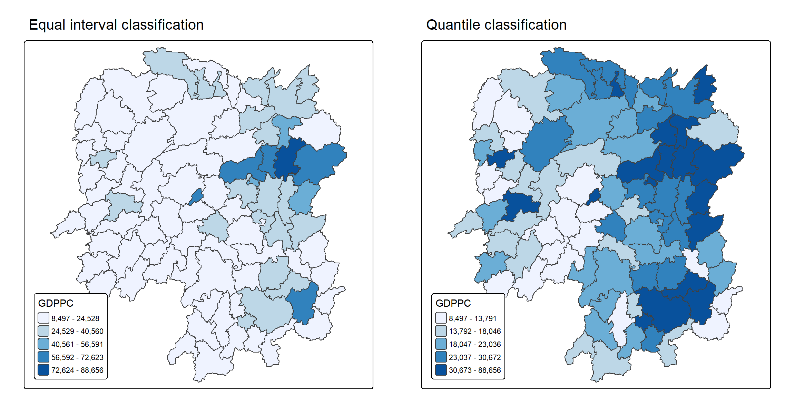
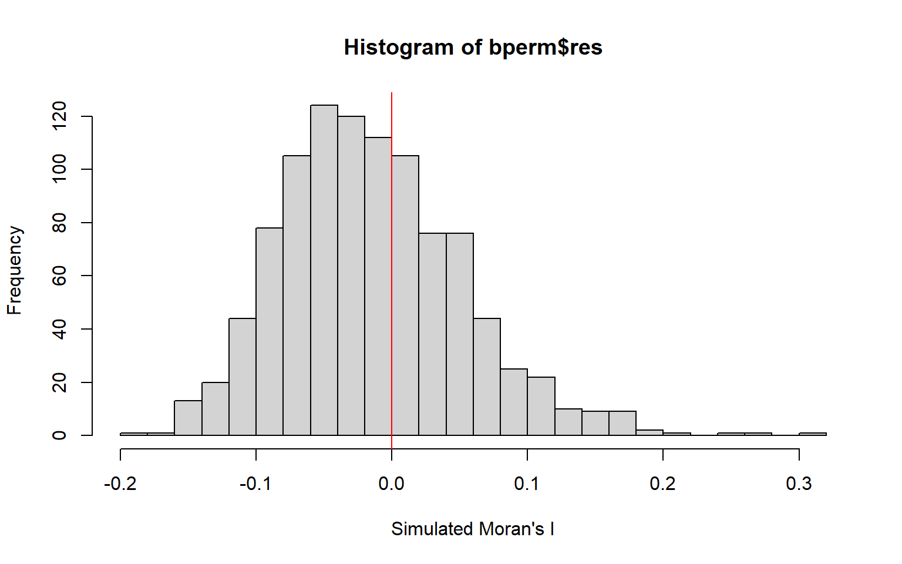
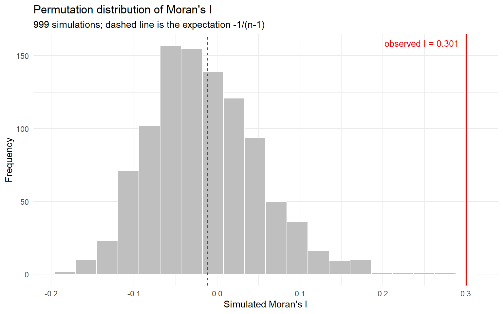
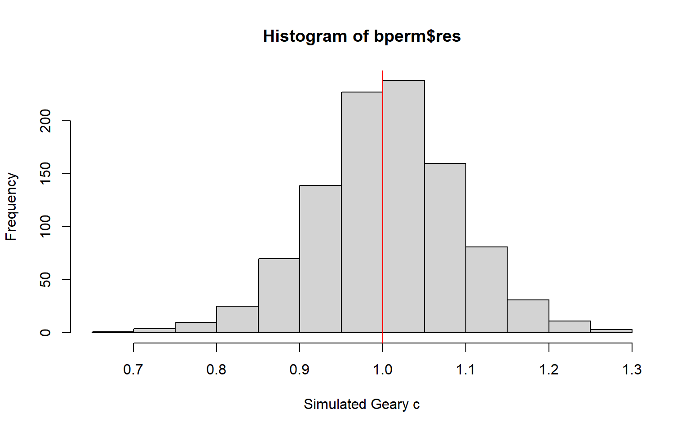
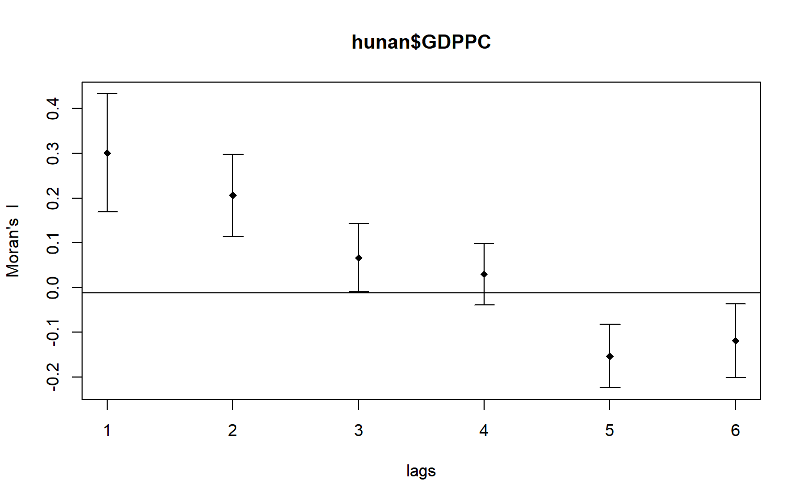
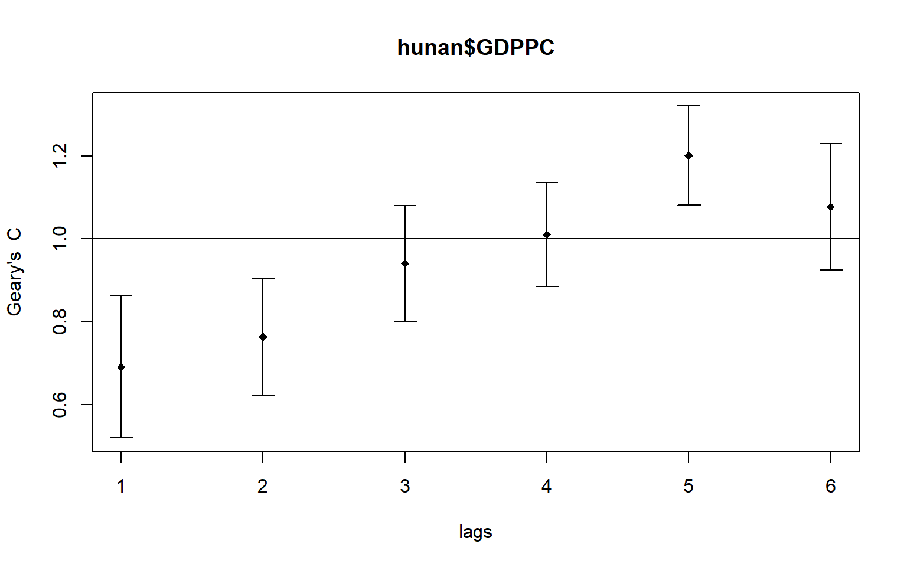

pacman::p_load(sf, spdep, tmap, tidyverse)Hands-on Exercise 5a: Global Measures of Spatial Autocorrelation
Overview
A choropleth map can look clustered without being clustered. The eye is a poor judge of randomness. It finds pattern in noise, and it is easily led by whichever class breaks the cartographer happened to choose. Whether similar values really do sit next to one another more often than chance allows is a statistical question, and the statistics that answer it are the global measures of spatial autocorrelation.
This exercise computes those measures for the 88 counties of Hunan province, using GDP per capita in 2012 as the variable of interest and the spdep package throughout. Three instruments are applied to the same data. Moran’s I is a cross-product statistic that behaves like a correlation coefficient between each value and the average of its neighbours. Geary’s C is a squared-difference statistic that compares the dissimilarity of neighbouring pairs with the dissimilarity of all pairs. The spatial correlogram recomputes either statistic at successive orders of contiguity, and so shows how far the dependence reaches.
Each of the first two is evaluated twice, once against its analytical sampling distribution and once against a Monte Carlo permutation distribution. The two routes rest on different assumptions, so agreement between them is informative in itself. By the end of the exercise the following are in place:
- geospatial data imported with the appropriate functions of sf,
- a csv file imported with the appropriate function of readr,
- a relational join performed with the appropriate function of dplyr,
- global spatial autocorrelation statistics computed with the appropriate functions of spdep, and
- a statistically defensible reading of what those statistics say.
The local counterpart of these measures, which asks not whether the province clusters but where, is the subject of Hands-on Exercise 5b.
Getting Started
The analytical question
Equal distribution of development across a province is a standard objective of local government and planning. The analytical task that follows from it is a chain of three questions, each asked only if the previous one has been answered:
- Is development evenly distributed geographically? If the answer is no, then
- is there a sign of spatial clustering? And if the answer to that is yes, then
- where are those clusters?
This exercise settles the first two for GDP per capita in Hunan province, People’s Republic of China. The third is left to Exercise 5b. A global statistic is by construction a single number for the whole map, so it cannot locate anything.
The Study Area and Data
Two data sets are used:
| Dataset | Description |
|---|---|
Hunan |
County boundary layer of Hunan province, China, in ESRI shapefile format |
Hunan_2012.csv |
Selected local development indicators for Hunan in 2012 |
These are the same two files used in Hands-on Exercise 4, carried over unchanged, so the neighbour structure built below is identical to the Queen contiguity list constructed there.
Setting the Analytical Tools
Four packages are used:
| Package | Role |
|---|---|
| sf | Importing and handling geospatial data |
| spdep | Spatial weights, and the global autocorrelation statistics and their permutation tests |
| tmap | Cartographic quality thematic maps |
| tidyverse | Data import, transformation and wrangling |
Getting the Data Into R Environment
Import shapefile into R environment
st_read() of sf imports the Hunan shapefile as a simple feature object:
hunan <- st_read(dsn = "data/geospatial",
layer = "Hunan")Reading layer `Hunan' from data source
`C:\Users\Imgigi\Desktop\629\hand-on-ex\hand-on-ex5\data\geospatial'
using driver `ESRI Shapefile'
Simple feature collection with 88 features and 7 fields
Geometry type: POLYGON
Dimension: XY
Bounding box: xmin: 108.7831 ymin: 24.6342 xmax: 114.2544 ymax: 30.12812
Geodetic CRS: WGS 84The header reports 88 polygon features with seven attribute fields, in geographic coordinates on WGS 84. The coordinates are deliberately left unprojected. Every statistic in this document is computed from a contiguity relation, and whether two counties share a boundary does not depend on the coordinate system. Exercise 5b does project the layer, because the distance bands used there do depend on it.
Import csv file into R environment
read_csv() of readr imports the indicator table. The output is a plain data frame with no geometry:
hunan2012 <- read_csv("data/aspatial/Hunan_2012.csv")Performing relational join
left_join() of dplyr attaches the indicator fields to the attribute table of the hunan simple feature object, and select() keeps the identifying fields and GDPPC:
hunan <- left_join(hunan, hunan2012, by = "County") %>%
select(1:4, 7, 15)The join key is written out rather than left to automatic matching, and hunan is named first so that the result keeps its geometry column and remains an sf object.
Visualising Regional Development Indicator
Before any test is run, the variable is mapped. Two choropleths of the same column are drawn, one classified by equal interval and one by quantile, because the pair shows that the first question above cannot be settled by looking:
equal <- tm_shape(hunan) +
tm_polygons(fill = "GDPPC",
fill.scale = tm_scale_intervals(
style = "equal",
n = 5,
values = "brewer.blues"),
fill.legend = tm_legend(
title = "GDPPC",
position = tm_pos_in("left", "bottom"))) +
tm_borders(fill_alpha = 0.5) +
tm_title("Equal interval classification")
quantile <- tm_shape(hunan) +
tm_polygons(fill = "GDPPC",
fill.scale = tm_scale_intervals(
style = "quantile",
n = 5,
values = "brewer.blues"),
fill.legend = tm_legend(
title = "GDPPC",
position = tm_pos_in("left", "bottom"))) +
tm_borders(fill_alpha = 0.5) +
tm_title("Quantile classification")
tmap_arrange(equal, quantile, asp = 1, ncol = 2)
The two maps are drawn from identical numbers and tell different stories. GDPPC in Hunan ranges from 8,497 to 88,656 with a median of 20,433, so the distribution is strongly right-skewed. Under equal interval that skew puts 58 of the 88 counties into the lowest class and only nine into the top three, so most of the province is drawn in one pale colour and the map reads as broadly uniform. Under quantile the same data fill all five classes by construction, and a dark north-eastern corner appears around Changsha.
Neither map is wrong, and that is the difficulty. A classification choice has changed the apparent answer to question 1, which is why a statistic that does not depend on class breaks is needed.
Global Measures of Spatial Autocorrelation
Computing Contiguity Spatial Weights
Every measure below is a weighted sum over pairs of counties, so the neighbour relation has to be fixed before anything can be computed. poly2nb() of spdep builds a neighbours list from regions with contiguous boundaries. Its queen argument defaults to TRUE, which returns first order neighbours under the Queen criterion, where a single shared point is enough to make two counties neighbours.
wm_q <- poly2nb(hunan, queen = TRUE)
summary(wm_q)Neighbour list object:
Number of regions: 88
Number of nonzero links: 448
Percentage nonzero weights: 5.785124
Average number of links: 5.090909
Link number distribution:
1 2 3 4 5 6 7 8 9 11
2 2 12 16 24 14 11 4 2 1
2 least connected regions:
30 65 with 1 link
1 most connected region:
85 with 11 linksThere are 88 area units, 448 non-zero links, and an average of 5.09 neighbours per county. The most connected unit has 11 neighbours, and two units have one neighbour each. No unit is isolated, which matters here: a county with no neighbours contributes nothing to the cross-products that make up these statistics, and has to be handled explicitly.
Row-standardised weights matrix
The neighbour list records who is a neighbour. The weights matrix records how much each neighbour counts, and nb2listw() converts one into the other. With style = "W" each of a county’s neighbours receives the fraction 1/(number of neighbours), so the weights in every row sum to one and the spatial lag of a county is the plain average of its neighbours’ values.
rswm_q <- nb2listw(wm_q,
style = "W",
zero.policy = TRUE)
rswm_qCharacteristics of weights list object:
Neighbour list object:
Number of regions: 88
Number of nonzero links: 448
Percentage nonzero weights: 5.785124
Average number of links: 5.090909
Weights style: W
Weights constants summary:
n nn S0 S1 S2
W 88 7744 88 37.86334 365.9147
NoteWhat the arguments do
The input to nb2listw() must be an object of class nb. Two arguments carry most of the meaning:
styletakes"W","B","C","U","minmax"or"S".Bis basic binary coding;Wis row standardised, summing over all links to n;Cis globally standardised, also summing to n;UisCdivided by the number of neighbours, summing to unity; andSis the variance-stabilising scheme of Tiefelsdorf et al. (1999, pp. 167-168).zero.policy = TRUEinserts a zero-length weights vector for any region with no neighbours, which produces a lag value of zero for that region. Whether zero is a sensible lag for an isolated unit is a substantive question, not a technical one. No unit is isolated here, so the argument never takes effect, and is set only so that the code does not depend on that remaining true.
The printed weights constants are the quantities the analytical tests are built from: S0 = 88, the sum of all weights, which equals n exactly because each row sums to one; S1 = 37.86; and S2 = 365.91. Row standardisation carries one well-known cost. Counties on the provincial edge have fewer neighbours, so each of the neighbours they do have takes a larger weight, and their lagged values rest on a thinner base than interior counties’. style = "B" is the more robust alternative, and "W" is kept here for interpretability.
Global Measures of Spatial Autocorrelation: Moran’s I
Moran’s I compares each value’s deviation from the provincial mean with the deviations of its neighbours. It is bounded approximately by −1 and +1. Positive values mean that similar values sit together, negative values mean that high and low values alternate, and the expectation under no spatial pattern is not zero but −1/(n−1), here −0.0115.
Moran’s I test
moran.test(hunan$GDPPC,
listw = rswm_q,
zero.policy = TRUE,
na.action = na.omit)
Moran I test under randomisation
data: hunan$GDPPC
weights: rswm_q
Moran I statistic standard deviate = 4.7351, p-value = 1.095e-06
alternative hypothesis: greater
sample estimates:
Moran I statistic Expectation Variance
0.300749970 -0.011494253 0.004348351 The observed I is 0.3007, against an expectation of −0.0115 and a variance of 0.004348 under the randomisation hypothesis. The standard deviate is 4.7351 and the one-sided p-value is 1.095 × 10-6, so the null hypothesis of spatial randomness is rejected at any conventional level. The sign is positive, which means the clustering is of like with like: counties with high GDPPC tend to border counties with high GDPPC, and the same holds at the low end. Development in Hunan is therefore not evenly distributed, and there is a sign of spatial clustering, which answers the first two of the three questions above.
The magnitude carries as much information as the p-value. An I of 0.30 is moderate rather than overwhelming. Neighbourhood explains a real but partial share of the variation in county income, and a great deal of that variation remains local to individual counties.
Computing Monte Carlo Moran’s I
The test above draws its p-value from an analytical approximation to the sampling distribution of I. That approximation is asymptotic and assumes a normality or randomisation null. A permutation test avoids the assumption entirely: moran.mc() reassigns the 88 observed GDPPC values to the 88 counties at random, recomputes I, and repeats, building the null distribution from the data rather than from theory. With nsim = 999 the observed value is compared against 999 simulations, for 1000 values in total.
set.seed(1234)
bperm <- moran.mc(hunan$GDPPC,
listw = rswm_q,
nsim = 999,
zero.policy = TRUE,
na.action = na.omit)
bperm
Monte-Carlo simulation of Moran I
data: hunan$GDPPC
weights: rswm_q
number of simulations + 1: 1000
statistic = 0.30075, observed rank = 1000, p-value = 0.001
alternative hypothesis: greaterset.seed() is called first so that the permutations, and therefore the printed p-value, are reproducible across renders.
The observed I of 0.30075 has rank 1000 of 1000, meaning no permutation of the data produced a value as high. The pseudo p-value is 1/1000 = 0.001, the smallest value 999 simulations can deliver. That figure is a floor rather than a measurement: the true p-value is smaller than 0.001 by an unknown amount, and the analytical test’s 1.1 × 10-6 is the better estimate of how much smaller.
The conclusion matches the analytical one, which is the point of running both. Had they disagreed, the randomisation-based p-value would have been the one to trust, since it makes no distributional assumption.
Visualising Monte Carlo Moran’s I
The simulated statistics are examined directly, rather than only through the p-value derived from them. The mean and variance of the 999 simulated values come first:
mean(bperm$res[1:999])[1] -0.01504572var(bperm$res[1:999])[1] 0.004371574summary(bperm$res[1:999]) Min. 1st Qu. Median Mean 3rd Qu. Max.
-0.18339 -0.06168 -0.02125 -0.01505 0.02611 0.27593 The simulated mean is −0.01505, against the theoretical expectation of −0.01149, and the simulated variance is 0.004372 against the theoretical 0.004348. The permutation distribution has reproduced the analytical moments to three decimal places. That is empirical confirmation that the assumptions behind moran.test() hold for this data set.
The distribution is then plotted with hist() and abline() of R Graphics:
hist(bperm$res,
freq = TRUE,
breaks = 20,
xlab = "Simulated Moran's I")
abline(v = 0,
col = "red")
The simulated values form a roughly symmetric distribution centred just below zero and running from −0.183 to 0.276. The observed I of 0.30075 is the single bar at the far right, outside the range of all 999 simulations, which is what rank 1000 means.
The red line is drawn at zero rather than at the expectation of −0.0115. On this scale the difference is invisible, but it matters in principle. The null value of Moran’s I for a finite sample is slightly negative, so treating zero as the benchmark introduces a small conservative bias into any visual reading.
The base graphics call answers the question directly. The same distribution drawn with ggplot2 carries both reference values explicitly, which makes the comparison easier to read:
ggplot(data.frame(sim = bperm$res[1:999]),
aes(x = sim)) +
geom_histogram(bins = 20,
fill = "grey75",
colour = "white") +
geom_vline(xintercept = -1 / (length(hunan$GDPPC) - 1),
colour = "grey30",
linetype = "dashed") +
geom_vline(xintercept = bperm$statistic,
colour = "red",
linewidth = 0.8) +
annotate("text",
x = bperm$statistic,
y = Inf,
vjust = 1.8,
hjust = 1.1,
label = "observed I = 0.301",
colour = "red",
size = 3.5) +
labs(x = "Simulated Moran's I",
y = "Frequency",
title = "Permutation distribution of Moran's I",
subtitle = "999 simulations; dashed line is the expectation -1/(n-1)") +
theme_minimal()
The gap between the red line and the right-hand tail of the grey distribution is the visual form of the test result. The observed statistic is not merely in the tail; it is beyond it.
Global Measures of Spatial Autocorrelation: Geary’s C
Moran’s I is built from cross-products of deviations from the mean, so it responds to whether neighbouring counties fall on the same side of the provincial average. Geary’s C is built from the squared differences between neighbouring values directly, so it responds to how far apart neighbours are in absolute terms. Geary’s C is therefore the more sensitive to local differences and Moran’s I the more sensitive to global structure, and the two need not agree.
The scale is also inverted. Geary’s C has an expectation of exactly 1 under spatial randomness. Values below 1 indicate positive spatial autocorrelation, and values above 1 indicate negative autocorrelation.
Geary’s C test
geary.test(hunan$GDPPC, listw = rswm_q)
Geary C test under randomisation
data: hunan$GDPPC
weights: rswm_q
Geary C statistic standard deviate = 3.6108, p-value = 0.0001526
alternative hypothesis: Expectation greater than statistic
sample estimates:
Geary C statistic Expectation Variance
0.6907223 1.0000000 0.0073364 The observed C is 0.6907, against an expectation of 1 and a variance of 0.007336. The standard deviate is 3.6108 and the p-value is 1.526 × 10-4. The alternative hypothesis is printed as Expectation greater than statistic, which is the direction corresponding to positive autocorrelation on this inverted scale. C is significantly below 1, so neighbouring counties differ from one another by less than randomly paired counties do. That is the conclusion Moran’s I reached, obtained here from a different functional form.
The agreement is a genuine finding rather than a formality. Moran’s I and Geary’s C are inversely related but not equivalent, and a data set in which a few extreme local contrasts sit inside an otherwise smooth field can produce a significant I with an unremarkable C. Hunan does not: the clustering is visible both to a statistic that looks at the mean and to one that looks at differences.
Computing Monte Carlo Geary’s C
As with Moran’s I, the analytical result is checked against a permutation distribution, this time with geary.mc():
set.seed(1234)
bperm <- geary.mc(hunan$GDPPC,
listw = rswm_q,
nsim = 999)
bperm
Monte-Carlo simulation of Geary C
data: hunan$GDPPC
weights: rswm_q
number of simulations + 1: 1000
statistic = 0.69072, observed rank = 1, p-value = 0.001
alternative hypothesis: greaterThe observed C of 0.69072 has rank 1 of 1000, and the pseudo p-value is again 0.001. The two statements are consistent. On the Geary scale the evidence of clustering lies in the lower tail, so being the smallest of the 1000 values is the strongest possible result.
This is worth spelling out, because the printed line alternative hypothesis: greater looks at first as though the wrong tail is being tested. Inside geary.mc() the p-value is computed from nsim - rank, so it falls as the observed rank falls. Inside moran.mc() it is computed so that it falls as the observed rank rises. The two functions carry the same label and read opposite ends of their respective distributions, which is correct, since a low C and a high I are the same substantive finding.
Visualising the Monte Carlo Geary’s C
The moments of the simulated distribution are computed as before:
mean(bperm$res[1:999])[1] 1.004402var(bperm$res[1:999])[1] 0.007436493summary(bperm$res[1:999]) Min. 1st Qu. Median Mean 3rd Qu. Max.
0.7142 0.9502 1.0052 1.0044 1.0595 1.2722 The simulated mean is 1.0044 against a theoretical expectation of exactly 1, and the simulated variance is 0.007436 against the theoretical 0.007336. Again the match is close, and again it is a reason to trust the analytical test.
hist(bperm$res, freq = TRUE, breaks = 20, xlab = "Simulated Geary c")
abline(v = 1, col = "red")
The simulated values run from 0.714 to 1.272 and centre tightly on 1, where the red reference line is drawn. Here the line sits at the true expectation rather than near it, because for Geary’s C the expectation is exactly 1 regardless of n.
The observed C of 0.69072 falls just outside the left edge of the simulated range. Compared with the Moran’s I histogram the margin is narrower: the observed value is barely beyond the most extreme simulation rather than well beyond it. That is the same information the two standard deviates carry, 3.61 for Geary’s C against 4.74 for Moran’s I. Both reject the null, but Moran’s I rejects it more emphatically, which is the expected ordering when the clustering is driven by a compact cluster of very high values rather than by a uniform smoothness across the whole map.
Spatial Correlogram
Both statistics so far have used one neighbour definition, namely counties that touch. But spatial dependence does not stop at a shared boundary, and its reach is itself a property worth measuring. A spatial correlogram recomputes a global statistic at increasing orders of contiguity: lag 1 is counties that touch, lag 2 is counties two boundaries away, and so on. Plotting the statistic against lag shows how quickly dependence decays, and at what distance it disappears or reverses.
Correlograms are not as fundamental as variograms, the keystone concept of geostatistics, but for exploratory and descriptive work they provide richer information, since each point comes with its own significance test.
Compute Moran’s I correlogram
sp.correlogram() of spdep computes a six-lag correlogram of GDPPC using Moran’s I, and plot() of base graphics draws it:
MI_corr <- sp.correlogram(wm_q,
hunan$GDPPC,
order = 6,
method = "I",
style = "W")
plot(MI_corr)
The plot alone does not support a complete interpretation, because not every plotted value is statistically significant. The full analysis report is needed:
print(MI_corr)Spatial correlogram for hunan$GDPPC
method: Moran's I
estimate expectation variance standard deviate Pr(I) two sided
1 (88) 0.3007500 -0.0114943 0.0043484 4.7351 2.189e-06 ***
2 (88) 0.2060084 -0.0114943 0.0020962 4.7505 2.029e-06 ***
3 (88) 0.0668273 -0.0114943 0.0014602 2.0496 0.040400 *
4 (88) 0.0299470 -0.0114943 0.0011717 1.2107 0.226015
5 (88) -0.1530471 -0.0114943 0.0012440 -4.0134 5.984e-05 ***
6 (88) -0.1187070 -0.0114943 0.0016791 -2.6164 0.008886 **
---
Signif. codes: 0 '***' 0.001 '**' 0.01 '*' 0.05 '.' 0.1 ' ' 1The six estimates are 0.3008, 0.2060, 0.0668, 0.0299, −0.1530 and −0.1187, and the significance codes separate them into three regimes.
Lags 1 and 2 are strongly positive and highly significant, at p = 2.19 × 10-6 and 2.03 × 10-6. Dependence is not confined to counties that share a boundary. It survives a second step outward at two-thirds of its original strength.
Lags 3 and 4 fade to nothing. Lag 3 is 0.0668 with p = 0.040, statistically significant at 5% but substantively negligible, and lag 4 is 0.0299 with p = 0.226, which is indistinguishable from the null. Positive dependence has run out somewhere between the second and third ring of neighbours.
Lags 5 and 6 turn significantly negative, at −0.1530 with p = 5.98 × 10-5 and −0.1187 with p = 0.0089. This is neither noise nor a failure of the method. At five or six steps from any given county one has crossed most of the province, so the comparison being made is essentially between the prosperous north-east and the poorer west and south. Distant pairs are systematically dissimilar, which is the signature of a single large gradient across the study area rather than of many small clusters.
Read together, the three regimes give a description that no single statistic could. Hunan’s development has a local neighbourhood effect reaching about two counties, embedded in a province-wide north-east to south-west gradient.
One caution attaches to the p-values in this table. Each is computed for its own lag with no correction for the fact that six tests are being read together, and the estimates are not independent of one another, since the lag-2 neighbours of a county are defined relative to its lag-1 neighbours. The pattern of the sequence is more informative than any individual p-value in it.
Compute Geary’s C correlogram and plot
The same call with method = "C" produces the Geary’s C correlogram:
GC_corr <- sp.correlogram(wm_q,
hunan$GDPPC,
order = 6,
method = "C",
style = "W")
plot(GC_corr)
print(GC_corr)Spatial correlogram for hunan$GDPPC
method: Geary's C
estimate expectation variance standard deviate Pr(I) two sided
1 (88) 0.6907223 1.0000000 0.0073364 -3.6108 0.0003052 ***
2 (88) 0.7630197 1.0000000 0.0049126 -3.3811 0.0007220 ***
3 (88) 0.9397299 1.0000000 0.0049005 -0.8610 0.3892612
4 (88) 1.0098462 1.0000000 0.0039631 0.1564 0.8757128
5 (88) 1.2008204 1.0000000 0.0035568 3.3673 0.0007592 ***
6 (88) 1.0773386 1.0000000 0.0058042 1.0151 0.3100407
---
Signif. codes: 0 '***' 0.001 '**' 0.01 '*' 0.05 '.' 0.1 ' ' 1The Geary estimates are 0.6907, 0.7630, 0.9397, 1.0098, 1.2008 and 1.0773. On the inverted scale they tell the same story as the Moran sequence, mirrored about 1.
Lags 1 and 2 are well below 1 and highly significant, at p = 3.05 × 10-4 and 7.22 × 10-4: neighbours, and neighbours of neighbours, are more alike than random pairs. Lags 3 and 4 sit at 0.94 and 1.01 with p = 0.389 and 0.876, indistinguishable from the null. Lag 5 rises to 1.2008 with p = 7.59 × 10-4, confirming the significant negative dependence the Moran correlogram found at the same lag.
The two sequences differ in one place. At lag 6 Geary’s C is 1.0773 with p = 0.310, which is not significant, where Moran’s I was −0.1187 with p = 0.0089. The disagreement follows from what each statistic measures. At six steps the pairs being compared are the far corners of the province, which fall on opposite sides of the provincial mean, and Moran’s I registers that reliably because it works from deviations about the mean. Geary’s C works from the squared differences between the pairs themselves, and at that range those differences are large but variable, so the same structure produces a weaker signal.
Where the two correlograms agree, at lags 1, 2 and 5, the finding can be treated as a property of the data rather than of the statistic chosen to measure it.
Reference
- Kam, T. S. R for Geospatial Data Science and Analytics, Chapter 9: Global Measures of Spatial Autocorrelation.
- Anselin, L. (1995) “Local Indicators of Spatial Association - LISA”, Geographical Analysis, Vol. 27, No. 2, pp. 93-115.
- Bivand, R. S. and Wong, D. W. S. (2018) “Comparing implementations of global and local indicators of spatial association”, TEST, Vol. 27, pp. 716-748.
- Tiefelsdorf, M., Griffith, D. A. and Boots, B. (1999) “A variance-stabilizing coding scheme for spatial link matrices”, Environment and Planning A, Vol. 31, pp. 165-180.
- spdep: Spatial Dependence - Weighting Schemes, Statistics